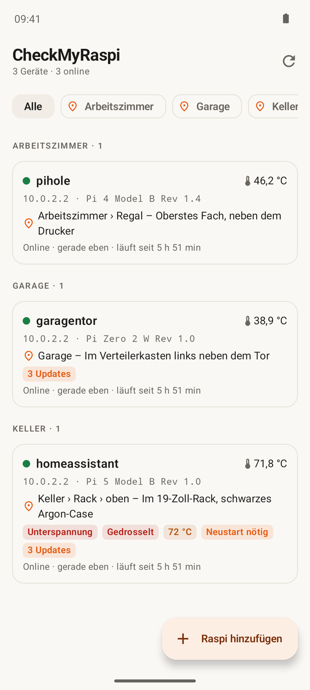
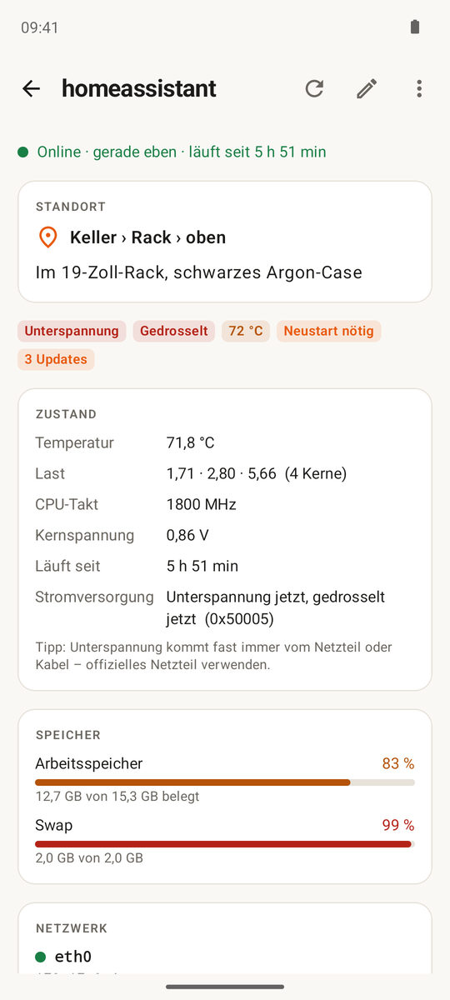
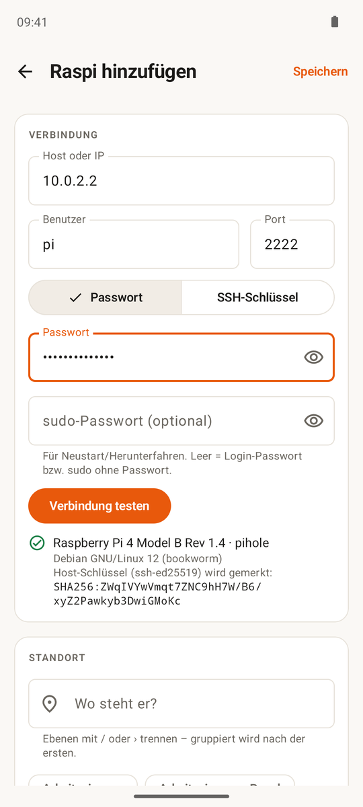

Alle Pis im Blick. Und wo sie stehen.
CheckMyRaspi fragt deine Raspberry Pis per SSH ab und zeigt sie in einer Übersicht – sortiert nach Standort, mit Foto und Notiz. So siehst du sofort, welcher Pi zu heiß läuft, zu wenig Strom bekommt oder Updates braucht. Und du weißt, wo du ihn findest.


Funktionen
direkt per SSH, ohne CloudÜbersicht nach Standort
Jeder neu eingetragene Pi landet sofort als Karte in der Übersicht – gruppiert nach Raum, filterbar, durchsuchbar nach Name, IP, Seriennummer oder MAC.
Wiederfinden
Standort in Ebenen („Keller › Rack › oben“) mit Vorschlägen, eine Notiz „So findest du ihn“ und ein Foto vom Einbauort. Modell, Seriennummer und MAC werden gemerkt – auch wenn sich die IP ändert.
Unterspannung & Drosselung
Liest vcgencmd get_throttled aus und sagt im Klartext, ob der Pi gerade zu wenig Strom bekommt oder seit dem Booten gedrosselt wurde.
Zustand auf einen Blick
Temperatur, Last, Takt, Kernspannung, Lüfter, Laufzeit, RAM, Swap, Datenträger, Netzwerk mit WLAN-Signal, Betriebssystem, Kernel und Firmware.
Updates & Neustart
Zeigt ausstehende apt-Updates und ob ein Neustart nötig ist. Neu starten oder herunterfahren geht direkt aus der App – mit Rückfrage.
Direkt eingreifen
Schnellbefehle wie „Fehlerhafte Dienste“, „Fehler seit dem Start“ oder „Dienst neu starten“, eigene Befehle (auch mit sudo) und die Ausgabe live in der App. Für mehr öffnet ein Tipp den Pi in deiner SSH-App.
Sicher gespeichert
Passwörter und Schlüssel liegen verschlüsselt im Android-Keystore. Der Host-Schlüssel jedes Pi wird gemerkt; ändert er sich, blockiert die App die Verbindung.
Einrichten
in einer Minute
Host, Anmeldung, Standort – fertig
- „Raspi hinzufügen“ antippen.
- Host oder IP (z. B.
raspberrypi.local), Benutzer und Passwort eingeben – oder einen SSH-Schlüssel aus einer Datei bzw. der Zwischenablage laden. - „Verbindung testen“: Die App zeigt Modell, Hostname, Betriebssystem und den Fingerprint des Host-Schlüssels, der ab jetzt geprüft wird.
- Standort, Notiz und ggf. Foto eintragen, speichern – der Pi erscheint in der Übersicht.
Funktioniert auch mit anderen Linux-Rechnern mit SSH; Pi-spezifische Werte bleiben dann einfach leer.
Herkunft
Quellcode auf GitHubCheckMyRaspi ist ein Neubau von RasPi Check von Michael Prankl (MIT-Lizenz), das seit 2023 nicht mehr gepflegt wird. Die Idee und die Abfragen stammen von dort; App, Oberfläche und Speicherung sind neu geschrieben.
| RasPi Check | CheckMyRaspi | |
|---|---|---|
| Übersicht | Auswahlliste in der Kopfzeile | Karten nach Standort, Suche, Filter |
| Standort | – | Ebenen, Notiz, Foto |
| Zugangsdaten | Klartext in der Datenbank | verschlüsselt (Android-Keystore), nicht im Backup |
| Host-Schlüssel | jeder akzeptiert | beim ersten Mal gemerkt, Änderung wird blockiert |
| Abfrage | rund 15 SSH-Sitzungen | eine Sitzung |
| Unterspannung, Updates | – | ja |
Datenschutz
DetailsWas die App nicht tut
- kein Konto, keine Registrierung
- keine Werbung, keine Tracker, keine Analyse
- keine Cloud – die App spricht nur mit den Geräten, die du einträgst
- Passwörter und Schlüssel landen nie im Backup
Berechtigungen
- Keine Speicher-Berechtigung – Export und Import laufen über die Dateiauswahl von Android
- Internet / Netzwerkstatus – SSH-Verbindungen zu deinen eigenen Geräten
- Keine Kamera-Berechtigung: Standortfotos nimmt die Kamera-App auf, die Galerie-Auswahl braucht keine Freigabe
Installation
APK-DateiSo geht’s
- APK auf dem Android-Gerät herunterladen.
- Datei antippen. Beim ersten Mal fragt Android, ob der Browser bzw. Dateimanager Apps installieren darf – „Zulassen“ wählen.
- „Installieren“ antippen und CheckMyRaspi öffnen.
- Auf dem Pi muss SSH aktiv sein (Raspberry Pi Imager → „SSH aktivieren“ oder
sudo raspi-config).
Prüfsumme kontrollieren
Optional die SHA-256-Prüfsumme der Datei mit dem Wert oben vergleichen:
sha256sum checkmyraspi-*.apk
Für Neustart und Herunterfahren braucht der Benutzer sudo-Rechte. Ohne eigenes sudo-Passwort verwendet die App das Login-Passwort bzw. sudo ohne Passwort.
Updates werden einfach über die bestehende App installiert; Geräte und Zugangsdaten bleiben erhalten.
Mindestanforderungen
- Android 8 (API 26) oder neuer, Smartphone oder Tablet (mehrspaltige Übersicht)
- Raspberry Pi oder anderer Linux-Rechner mit SSH im selben Netz (oder per VPN erreichbar)
- Keine Google-Play-Dienste nötig
Changelog
1.2.0 16. November 2026
- Neu: „Befehle“ auf der Geräteseite – Schnellbefehle zum Nachsehen (fehlerhafte Dienste, Fehler im Journal, Kernel-Meldungen, Speicherplatz, Prozesse, Stromversorgung, Netzwerk, Dienst-Status und -Log) und zum Eingreifen (Dienst neu starten, Paketlisten aktualisieren, Paket-Cache leeren, Journal kürzen). Die Ausgabe erscheint live, lässt sich abbrechen und kopieren.
- Eigene Befehle frei eingeben (wahlweise mit sudo) und merken;
{}fragt beim Ausführen einen Wert ab. Gemerkte Befehle wandern mit in den Export. - „SSH-App“: öffnet den Pi mit einem Tipp in einer installierten SSH-App wie ConnectBot.
- Hängt der SSH-Dienst eines Pi, sagt die App das nach 30 Sekunden im Klartext statt endlos zu warten.
1.1.0 16. November 2026
- Export und Import (Menü ⋮ in der Übersicht): alle Geräte mit Standort, Notizen und Fotos als Datei – zum Umzug aufs Tablet oder als Sicherung. Zugangsdaten auf Wunsch mit, dann mit einer eigenen Passphrase verschlüsselt.
- Geräte ohne Zugangsdaten (z. B. nach einem Import) zeigen „Zugangsdaten fehlen – bitte bearbeiten“ statt eines Anmeldefehlers.
1.0.1 16. November 2026
- Verständliche Fehlermeldungen, wenn ein Gerät nicht antwortet – mit der aufgelösten IP-Adresse und dem wahrscheinlichen Grund (ausgeschaltet, anderes Netz, SSH nicht aktiv).
- Neuer Hinweis „OS ohne Sicherheitsupdates“ für Raspbian/Debian-Versionen, deren Unterstützung ausgelaufen ist (z. B. Buster, Bullseye).
- „1 Kern“ statt „1 Kerne“ beim Pi Zero.
1.0.0 16. November 2026
- Erste Veröffentlichung: Übersicht nach Standort mit Suche und Filter, Standort mit Notiz und Foto, Erkennung über Modell, Seriennummer und MAC, Zustand inkl. Unterspannung, Speicher, Netzwerk und apt-Updates, verschlüsselte Zugangsdaten, Prüfung des Host-Schlüssels, Neustart und Herunterfahren.